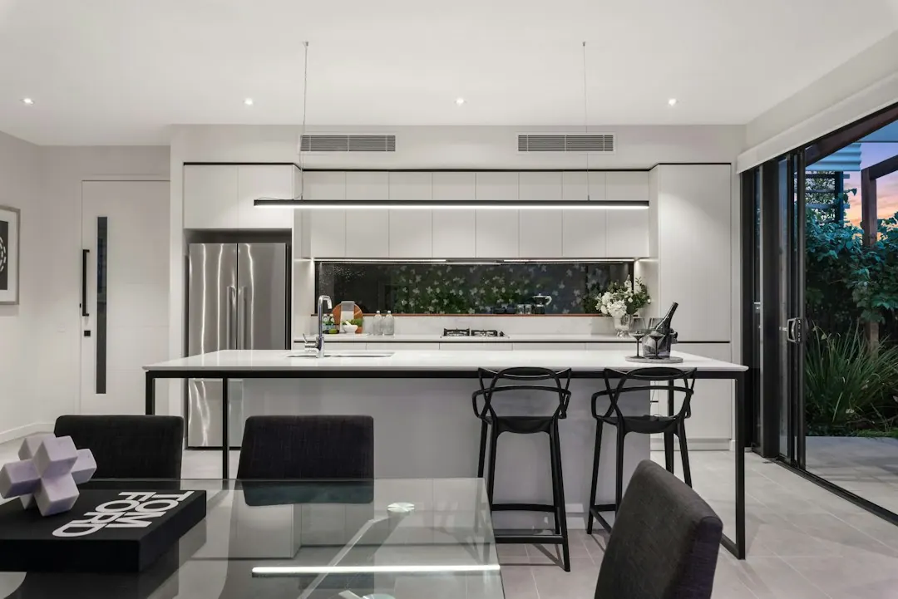

Minor roller door repairs in Brisbane are typically around $90 to $310, depending on the fault and parts required. Common issues include jammed or noisy doors, opener faults, broken springs, remote problems, damaged tracks, worn rollers and frayed cables. A useful enquiry identifies the door style, suburb, symptoms and urgency, then asks whether servicing, parts replacement, repair or a new installation suits the property.
For homeowners comparing roller door repairs brisbane options, the useful decision is whether the issue is mechanical, opener related or electrical, and whether the existing door remains practical to restore.
Roller Door Repairs Brisbane Explained
The Roller Doors Brisbane service information separates mechanical problems from opener and motor faults, access device issues and electrical work. A jammed, bent, noisy or sticking curtain needs a different inspection from a door that ignores its remote, stops at the wrong limit or has a failed safety beam.
Describe the behaviour in plain language. Note whether the door moves unevenly, remains stuck open or shut, has jumped its guides, makes noise during travel or responds only intermittently. Include the door style, suburb and whether the suspected issue concerns a spring, opener, remote, keypad, track, cable or roller.
- Mechanical symptoms may involve the curtain, barrel, guides, tracks, rollers, cables or general hardware.
- Opener symptoms may involve the motor, receiver, limits, remotes, keypad or safety beams.
- Hardwired opener wiring and fixed electrical components may require a licensed Queensland electrician where required.
A worked enquiry example for a Brisbane property
Consider a homeowner whose roller door is noisy, sometimes stops during travel and is difficult to open. A useful first message would read: "Suburb: [insert suburb]. Property: [house, townhouse, apartment or shed]. Door style: [insert style]. Problem: [describe the noise and stopping]. Access: [stuck open, stuck shut or still usable]. Suspected part: [spring, opener, track, cable, roller or unknown]."
That message gives the specialist a fault pattern without presuming the diagnosis. The reply should clarify whether the next step is service, repair, parts replacement or installation, and whether the curtain, motor and hardware need to be considered together. If the issue affects hardwired components, ask whether licensed electrical work is required.
For a second independent explanation of repair decisions, see this Brisbane roller door repair decision guide.
Use the cost range as a starting point
The stated Brisbane range for minor repairs is $90 to $310, depending on the fault and parts required. It is a guide for a defined minor job, not a universal price for spring work, opener replacement, extensive track damage or a new installation.
Ask whether a quote includes diagnosis, labour, parts and completion of the proposed work. Confirm whether the scope concerns re railing, alignment, a spring, cable, rollers, remote, receiver or opener. If replacement is recommended, ask why restoration is unsuitable and whether the scope includes the door, opener options and installation.
- State when the symptom began and whether it is intermittent.
- Identify the door style and affected component if known.
- Explain whether access is urgent because the door is stuck open or shut.
- Ask what has been inspected before agreeing to replacement.
Match the questions to the property setting
The location material refers to family homes, duplexes, townhouse pockets, apartment basements, Queenslanders, hillside lots, renovated post war houses, double garages and light commercial sheds. Those settings can change the information needed before a visit, including access, clearance, shared areas and the type of door hardware involved.
Western and inner western properties may involve split levels, steeper driveways and basement access. Inner south and eastern settings may combine character homes, renovated houses, newer townhouses and double garages. Northside locations may include established houses, townhouse rows and longer blocks. State the property arrangement rather than relying on the suburb alone.
The listed local pages include Chermside, Aspley, Everton Park, Stafford, The Gap, Indooroopilly, Coorparoo, Camp Hill and Carindale. For any of those locations, add the suburb to the fault description and explain how the garage is reached.
Choose restoration, components or installation
Spring replacement, cable and roller replacement, off track work, remote programming and opener repairs address defined faults. They do not automatically require a new door. A repair discussion should identify the failed part, related hardware that needs inspection and the result expected after the work.
Installation is a separate path when the existing system cannot be sensibly restored or no longer suits the property. The listed options include roller, sectional and tilt doors, with opener choices and compliance notes where building work thresholds apply. Ask what changes with a new door, which opener is included and whether the quoted work covers installation.
The final decision should record the fault, proposed scope, parts involved and reason for choosing repair or replacement. That gives the property owner a clear basis for accepting the next step.
- Describe the fault. Record the movement, noise, access failure, remote response and any visible off track or hardware issue.
- Add property context. State the suburb, door style and whether the garage belongs to a house, townhouse, apartment or shed.
- Request the proposed scope. Ask whether the recommendation is servicing, repair, parts replacement or installation.
- Confirm the quotation. Check labour, parts, electrical involvement and the result the quoted work is intended to deliver.
| Situation | Likely focus | Useful question |
|---|---|---|
| Jammed, bent or noisy door | Curtain, barrel, guides, tracks or mechanical hardware | Can the existing door be aligned and restored? |
| Opener or access problem | Motor, receiver, limits, safety beams, remote or keypad | Is the issue in the opener, access device or fixed wiring? |
| Spring, cable or roller failure | Component replacement and related hardware inspection | Which part failed, and what else should be checked? |
| Ageing or unsuitable door | Repair comparison with a roller, sectional or tilt door | Why is installation more suitable than restoration? |
Common questions
How much do minor repairs cost in Brisbane? The stated range is typically $90 to $310, depending on the fault and parts required. More extensive opener, electrical, track or replacement work may need a separate quote.
What details should I provide when asking for help? Provide the suburb, door style, property type and exact symptoms. Mention whether the issue involves a spring, opener, remote, keypad, track, cable, roller or urgent access.
When might an electrician be involved? Electrical opener work is handled by a licensed Queensland electrician where required, particularly when hardwired wiring or fixed electrical components are involved.
Should an older door be repaired or replaced? Ask for the curtain, motor and hardware to be considered together. Compare the reason, scope and intended result of restoration with the details of a new roller, sectional or tilt door.
This guide covers Brisbane roller door fault diagnosis, repair choices, cost questions, property context and booking preparation.